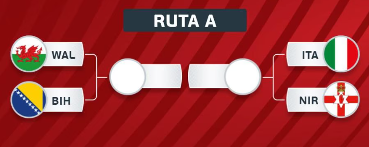

El Ganador de la Ruta A (UEFA) es el integrante que todos los demás quieren evitar, pues este cupo saldrá de un repechaje de altísimo voltaje. Si Italia logra imponerse y clasificar tras los fantasmas de ediciones pasadas, el Grupo B ganaría automáticamente a una tetracampeona mundial con figuras actuales como Nicolò Barella y una historia que incluye a gigantes como Roberto Baggio o Paolo Maldini. Sea quien sea el clasificado (Gales con su espíritu guerrero o la técnica de Bosnia), aportará ese roce competitivo europeo que suele definir quién avanza a la siguiente ronda. Este equipo llegará con la inercia de haber ganado "finales" previas en marzo de 2026, lo que los convierte en el rival más peligroso emocionalmente.